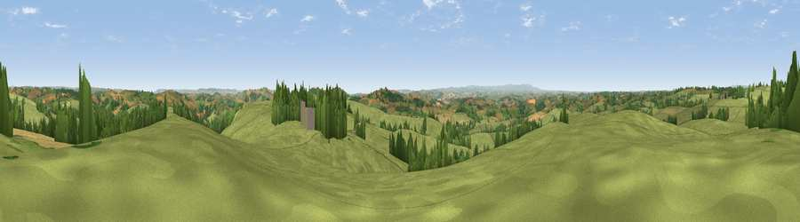

Viewpoint near Way Village
#10668 in England · top 11% of its area beats it · near Way VillageThe view, rendered

A 360° render of this exact spot computed from the terrain model, tree cover and land cover — summer colours, afternoon light, calibrated against photographs of famous viewpoints. Real trees, hedges and buildings will differ in detail.
The panorama
Grey silhouette: terrain skyline in each direction (720 bearings, Earth curvature and refraction included). Dashed green: skyline with trees (+15 m) and buildings (+8 m) as obstacles. Blue strip: how far the ground is visible on each bearing.
Where the view opens
Wedge length = distance to the farthest visible ground on that bearing (vegetation-aware). Rings at 10, 25 and 50 km.
What fills the view
81% grassland · 13% woodland · 5% cropland ·
Angular shares of the visible panorama (visual magnitude), not map area. Landscape diversity 0.27 (0–1 Shannon).
Key numbers
More beautiful places nearby
The staircase of upgrades: each row has a higher view potential than everything closer. Driving times are estimates from straight-line distance, calibrated against real road routing — check an actual route before setting out.
| Place | Direction | Drive | Score |
|---|---|---|---|
| Viewpoint near Stockleigh Pomeroy | S · 4 km | ~9 min | 69.7 |
| Cadbury Castle | SSE · 4 km | ~10 min | 73.7 |
| Fursdon Hill | SE · 5 km | ~12 min | 76.2 |
| Viewpoint near Stockleigh Pomeroy | S · 6 km | ~13 min | 78.9 |
| Viewpoint near Whitestone | S · 15 km | ~26 min | 79.8 |
| Viewpoint near Kenn | S · 25 km | ~41 min | 80.0 |
| Viewpoint near Kenton | S · 28 km | ~45 min | 80.7 |
| Viewpoint near Tipton St John | SE · 28 km | ~45 min | 81.5 |
50.87188, -3.57571 · source: screening · position refined by local search. Computed location — check access rights before visiting.